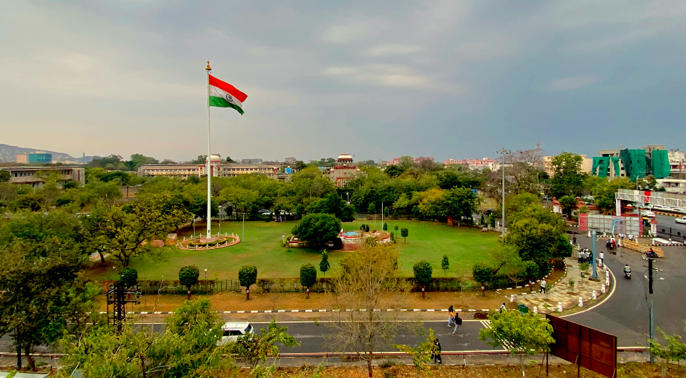
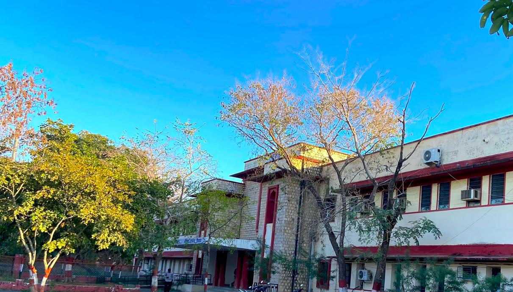
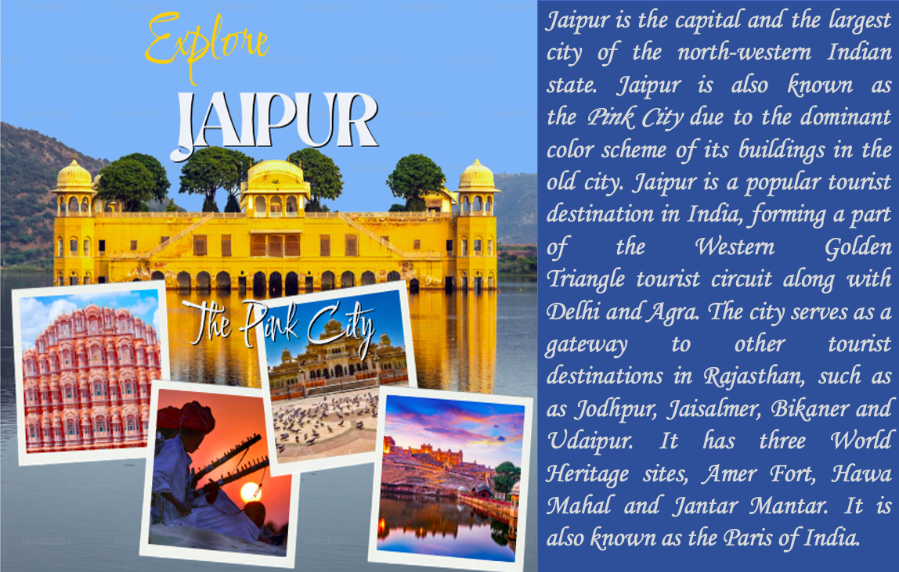

University of Rajasthan is the largest state university in Rajasthan (India), founded in 1946, located in Jaipur City, and has a prestigious NAAC A+ grade accreditation. Over the years, the University has redefined itself by meeting the challenges of changing trends in the educational system and has made a significant contribution to the field of higher education. The past seven decades have been remarkable for UOR, Jaipur, with the landmark achievement of University with Potential for Excellence. Click here for more details

The Department of Physics, established in 1960, offers postgraduate and PhD programs. Over the past six decades, the Department's research activities have been supported by distinguished national and international agencies, UGC, SERB, DEIT, DST, CERN, BRNS, DRDO, CSIR, MNRE, UGC-DAE CSR, IUAC, and ISRO. The department was awarded the status of "Centre for Advanced Studies" (CAS) by UGC for the period 2015–2020. The Department's major research focus encompasses Materials Science, High-Energy Physics, Plasma Physics, Nuclear Physics, Solar Energy, Hydrogen Energy, Biophysics, and Microwave Electronics. The Department is well renowned in the global scenario for the scientific achievements of its faculty and alumni. Click for more details...

Jaipur is the capital and the largest city of the north-western Indian state. Jaipur is also known as the Pink City due to the dominant color scheme of its buildings in the old city. Jaipur is a popular tourist destination in India, forming a part of the Western Golden Triangle tourist circuit along with Delhi and Agra. The city serves as a gateway to other tourist destinations in Rajasthan, such as Jodhpur, Jaisalmer, Bikaner and Udaipur. It has three World Heritage sites, Amer Fort, Hawa Mahal and Jantar Mantar. It is also known as the Paris of India.
How to reach Jaipur: The nearest airport is Jaipur International Airport (JAI), approximately 7 kilometres from the University of Rajasthan. Direct flights connect Jaipur to major Indian cities like Delhi, Mumbai, and Bangalore. The city is well-connected by rail and road, with two major railway stations: Gandhi Nagar and Jaipur Railway Station. It is easily accessible by bus from nearby cities such as Delhi, Agra, and Kota.